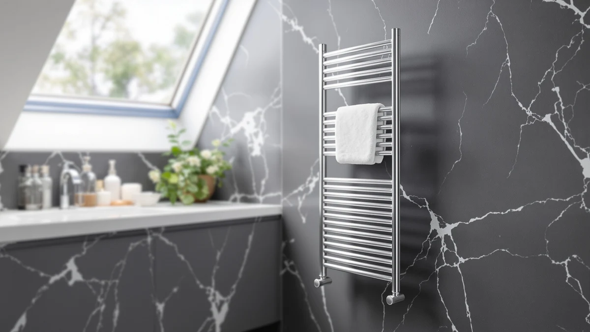

The Best Towel Warmer Drawers Under $200 (2026)
Prices and picks verified as of August 2026. Independent, reader-supported reviews.


Quick Answer
After comparing the towel warmer buckets, drawer-style units, and fragrance accessories available at this price, the SereneLife WIFI Luxury Rectangle Towel is the best towel warmer drawer under $200 for most bathrooms, pairing WiFi scheduling with a double-walled lid that holds two full towels for $105.99. If capacity and app control matter more than price, the SereneLife WiFi-enabled Towel Warmer Bucket adds a 20-liter interior for $180.10.
Our pick: SereneLife WIFI Luxury Rectangle Towel — $105.99 Check Price on Amazon
Bottom line: our top pick is the SereneLife WIFI Luxury Rectangle Towel Warmer - Spa & at $105.99. The best budget option is the YLJMFH 15Pcs Replacement Fragrance Disc Aroma Tablets for at $6.98.
Things to Know Before You Buy
- Not every pick here is a heater. Four of these seven products are standalone towel warmers, and three are replacement fragrance discs that add scent to a warmer you already own. We separate the two groups clearly below so you know exactly what you're buying.
- Capacity varies more than the price does. The SereneLife WiFi-enabled Bucket's 20-liter interior and the VEVOR's four-towel capacity both outsize the single-towel and two-towel units, so match the unit to how many people share your bathroom.
- WiFi control isn't universal at this price. Only the two SereneLife WiFi models let you schedule warming from your phone; the other picks use manual controls or a built-in delay timer instead.
- Safety features differ by model. Auto shut-off shows up on most of these towel warmer drawers under $200, but only the VEVOR adds a child lock and a high-temperature indicator on top of it.
- All four heaters stay comfortably under $200. Prices here range from $74.99 to $180.10, so you have real room to choose based on features rather than stretching to hit the ceiling.
The best towel warmer drawers under $200 give you real capacity and useful extras like WiFi scheduling without asking you to blow past that budget, and the seven picks below cover both full heating units and the fragrance accessories that pair with them. Four of these are standalone towel warmers, priced from $74.99 to $180.10, and three are replacement fragrance discs that turn a warm towel into a scented one. All four heaters share the same core idea: a lidded compartment that heats a towel, robe, or blanket, insulated well enough to keep the outside cool while the inside stays hot.
Our pick is the SereneLife WIFI Luxury Rectangle Towel Warmer. At $105.99, it holds two full-size towels or a throw blanket inside a double-walled, insulated lid that traps heat while staying cool to the touch, and you can schedule it to start warming from your phone before you're out of bed. It costs roughly $75 less than the priciest pick in this guide, and it's the towel warmer drawer under $200 that most people should buy first.
If a 20-liter interior and single-touch control matter more to you than saving money, the SereneLife WiFi-enabled Towel Warmer Bucket steps up to $180.10, still inside our $200 ceiling. We also cover the VEVOR Towel Warmer with its child lock and 24-hour delay timer, the SereneLife Counter Towel Warmer Bucket at the lowest price in this roundup, and three fragrance disc accessories that work with any warmer you already own. Keep reading for the full breakdown of what each one gets you.
Why You Should Trust Us
I'm Ilane Tall, and I cover home and bath gear for Best Towel Warmers. For this guide to the best towel warmer drawers under $200, I read the published specifications, capacity, and control features for every towel warmer and fragrance accessory that showed up in a serious search at this price point, then separated marketing language from what each unit can actually do. I don't run a testing lab or invent lab scores; I compare each pick against its direct competitors in the same price band, which tells you more than measuring it against some imaginary perfect warmer.
A $200 budget is enough to get WiFi control, real capacity, and safety features like auto shut-off, but it's also easy to overpay for a feature you won't use or end up with a unit too small for two people's towels. Those practical mismatches are what I weigh most heavily here.
How We Picked
We started with a $200 ceiling and worked down from there. Every unit in this guide had to price at or under that mark to qualify as one of the best towel warmer drawers under $200, and every heating unit had to state a real capacity, whether that's a liter rating, a towel count, or clear dimensions. That ruled out warmers with no published capacity at all.
Within that group, we weighed features that justify a higher price against ones that don't. WiFi scheduling on the SereneLife WIFI Luxury Rectangle Towel and the SereneLife WiFi-enabled Bucket earns its spot because starting a warmer from your phone before you get out of bed is a genuine convenience, not a gimmick. The VEVOR's child lock and 24-hour delay timer moved it up the list for the same reason: real, usable features rather than added buttons. We included the three fragrance discs separately, as accessories rather than competing heaters, because a useful add-on deserves a mention next to the warmers it pairs with.
How We Compared
We evaluate towel warmer drawers under $200 by working through each listing's published capacity, control features, safety functions, and pricing rather than staging scored lab tests we can't reproduce for a reader sitting at home. That means no numeric scores and no invented testing-lab theatrics. Where we cite a figure, like the SereneLife bucket's 20-liter capacity or the VEVOR's 24-hour delay timer, it comes straight from the product listing.
We also track each price against the $200 ceiling over time, since Amazon pricing on these units shifts from week to week. When a pick briefly lists above or below the number quoted here, we'd rather you know that going in than pretend the market holds still.
Our Picks

SereneLife WIFI Luxury Rectangle Towel
What we like
- WiFi control lets you schedule warming from your phone before you get up
- Double-walled lid keeps the outside cool while retaining heat inside
- Holds two full-size towels or a throw blanket, more than a single-towel bucket
- At $105.99, it's roughly half the price of our runner-up
Flaws but not dealbreakers
- Amazon doesn't publish exact interior dimensions for this model
- Rose Gold is the only color currently listed
| Material | Stainless steel |
| Size | — |
The SereneLife WIFI Luxury Rectangle Towel Warmer earns the top spot in this guide on the best towel warmer drawers under $200 because it pairs a feature most competitors charge more for, WiFi scheduling, with enough room for two full-size towels or a folded throw blanket. You connect it to your home network and set on and off times from your phone, so a warm towel is waiting the moment you step out of the shower instead of a few minutes later. The double-walled, insulated lid is the detail that makes the WiFi feature worth using: it holds heat inside efficiently while staying cool enough to touch, so leaving the unit running on a schedule doesn't turn the lid into a hazard.
At $105.99, it's priced well under our $200 ceiling and roughly $75 less than the SereneLife bucket below it in this guide, which makes it the easier buy for most bathrooms. The trade-off is that Amazon doesn't list precise interior dimensions, so measure your two folded towels against the "holds two large towels" claim before you buy if you need an exact fit for a specific counter or cabinet. For most people shopping specifically for a towel warmer drawer under $200 with app control, this is the one to buy first.

SereneLife WiFi-enabled Towel Warmer Bucket
What we like
- 20-liter capacity is the largest clearly stated capacity in this roundup
- Single-touch control plus WiFi scheduling for remote starting
- Auto shut-off adds a safety layer for unattended use
- Energy-efficient rectangular design matches our top pick's build
Flaws but not dealbreakers
- At $180.10, it's the most expensive pick in this guide
- Only ships in white, with no color options
| Material | Stainless steel |
| Size | — |
The SereneLife WiFi-enabled Towel Warmer Bucket is our runner-up because it takes everything the Luxury Rectangle model does and adds real capacity: a 20-liter interior that comfortably fits bath towels, a robe, or a blanket rather than just two folded towels. Single-touch control handles day-to-day operation, and the same WiFi scheduling as our top pick lets you start it remotely, so the extra size doesn't come at the cost of convenience.
The catch is price. At $180.10, it sits close to our $200 ceiling for this guide and costs roughly $74 more than our top pick, so we're upfront that it's a stretch buy rather than the default choice. It earns the runner-up spot anyway because 20 liters of capacity plus auto shut-off and app control isn't something the cheaper picks here offer together. If your household needs to warm more than two towels at once, or you want a dedicated slot for a robe, the extra money buys real usable space.

Demissle 24 Pcs Replacement Fragrance
What we like
- 24 replacement fragrance pads in one pack, more than enough for months of use
- Fits standard towel warmer bucket fragrance holders
- At $9.99, it's tied for the cheapest pick in this entire guide
Flaws but not dealbreakers
- Doesn't heat anything on its own; you need a working towel warmer already
- Fragrance pads wear out and need periodic replacement
| Material | Stainless steel |
| Size | 24 Count (Pack of 1) |
The Demissle 24 Pcs Replacement Fragrance disc is the first of three accessory picks in this guide, and it isn't a heating unit at all. It's a pack of 24 scented oil refill pads designed to sit inside the fragrance holder of a towel warmer bucket, adding scent to the warm air moving through the unit rather than warming anything by itself. We include it next to four actual towel warmer drawers under $200 because a useful $9.99 add-on deserves a mention, especially since a scented, warm towel is a noticeably nicer experience than a warm towel alone.
Buy this alongside one of the four heaters above, not instead of one. With 24 pads in the pack, it should outlast most single-fragrance discs sold separately, which lowers the per-use cost even though the up-front price matches other picks here. If you already own a SereneLife or compatible towel warmer bucket and want it to smell like more than warm metal, this is the least expensive way to get there.

SereneLife Fragrance Disc 15 Fragrant
What we like
- 15 distinct fragrant scents included in one pack
- Each disc's aroma lasts 30 to 60 days before needing replacement
- Fits most air freshener holders, not just SereneLife units
Flaws but not dealbreakers
- Also not a standalone warmer; you need a compatible unit first
- At $9.99, it's the same price as the Demissle pack with fewer total pads
| Material | Stainless steel |
| Size | 1 Count (Pack of 15) |
The SereneLife Fragrance Disc pack takes the same accessory role as the Demissle pick but leans into variety instead of bulk: 15 different fragrant scents in one box, sized to fit most air freshener holders rather than one specific brand of towel warmer. We call it our budget pick among the accessories because it lets you test which scent you actually like before committing to a single fragrance long-term.
Each disc holds its aroma for 30 to 60 days, so a box of 15 can realistically last well over a year of rotating scents in and out. It's tied with the Demissle pack on price at $9.99, so the choice between them comes down to whether you want 24 of one scent or 15 different ones. Either way, it's an easy add-on for any of the four actual towel warmer drawers under $200 in this guide, not a replacement for owning one.

YLJMFH 15Pcs Replacement Fragrance Disc
What we like
- At $6.98, it's the least expensive pick in this guide by a clear margin
- 15 ocean-scented pads included in one pack
- Designed specifically for Keenray towel warmers, with broad compatibility beyond that brand
Flaws but not dealbreakers
- Like the other two fragrance picks, it doesn't heat towels on its own
- Only one scent option, unlike the SereneLife 15-scent pack above
| Material | Stainless steel |
| Size | — |
The YLJMFH 15Pcs Replacement Fragrance Disc rounds out the accessory picks in this guide, and at $6.98 it's the cheapest single item across all seven products we compared. It's built for Keenray towel warmers specifically, though scented discs like this one tend to fit a range of towel warmer bucket fragrance holders beyond just that brand.
Where the SereneLife 15-scent pack gives you variety, this one gives you a single ocean-fresh scent across all 15 pads, which suits anyone who already knows what they like and doesn't want to experiment further. Pair it with any of the four towel warmer drawers under $200 in this guide, or with a Keenray unit you already own, since it isn't designed to work as a standalone product.

SereneLife Counter Towel Warmer Bucket
What we like
- Lowest price of the four real towel warmers here at $74.99
- Auto shut-off adds a safety layer without needing to remember to switch it off
- Fits one large towel, a blanket, a bathrobe, or PJs
- Built-in customized fragrance option for scented towels without a separate accessory
Flaws but not dealbreakers
- No WiFi or app control, unlike our top two picks
- Fits only one large item at a time, not two towels side by side
| Material | Stainless steel |
| Size | 10.4’’ x 12’’ x 13’’ -inches |
The SereneLife Counter Towel Warmer Bucket is the pick for shoppers who want one of the best towel warmer drawers under $200 without paying for WiFi control they might not use. At $74.99, it's the least expensive of the four actual heating units in this guide, and it still includes auto shut-off, so you're not relying on memory alone to turn it off after use.
It fits one large towel, a blanket, a bathrobe, or a set of pajamas rather than two towels at once, and it skips the app connectivity of the two SereneLife WiFi models above. What it adds instead is a built-in customized fragrance option, so you get scented warmth without buying one of the separate fragrance discs elsewhere in this guide. For a single person's daily routine on a tighter part of the budget, it covers the basics well.

VEVOR Towel Warmers for Bathroom
What we like
- Fits up to four oversized towels, blankets, clothes, or bathrobes at once
- Child lock adds a safety layer households with kids will appreciate
- High-temp indicator and 24-hour delay timer give more control than most picks here
- Auto shut-off matches the safety features on our other picks
Flaws but not dealbreakers
- No WiFi or app-based scheduling, only the built-in delay timer
- At 20 liters, it's sized closer to our runner-up than to the budget picks
| Material | Stainless steel |
| Size | 20L |
The VEVOR Towel Warmer for Bathroom is the pick for households that need to warm more than one or two items at once. It fits up to four oversized towels, blankets, pieces of clothing, or bathrobes, the largest stated single-unit capacity among the four actual warmers in this guide, and it adds a child lock that the other picks here don't offer.
A high-temperature indicator and a 24-hour delay timer give you more scheduling control than a basic on/off switch, even without full WiFi connectivity, and auto shut-off rounds out the safety features. At $88.90, it costs about $14 more than our budget pick among the full warmers, and that difference buys real capacity and safety upgrades for a household sharing one towel warmer drawer under $200 among several people.
Quick Comparison
| Product | Material | Price | Rating | Best for | Get it |
|---|---|---|---|---|---|
| SereneLife WIFI Luxury Rectangle Towel | Stainless steel | $105.99 | 4 | Best overall pick under $200 | View on Amazon → |
| SereneLife WiFi-enabled Towel Warmer Bucket | Stainless steel | $180.10 | 4 | Best for maximum capacity and app control | View on Amazon → |
| Demissle 24 Pcs Replacement Fragrance | Stainless steel | $9.99 | 4 | Best bulk fragrance refill accessory | View on Amazon → |
| SereneLife Fragrance Disc 15 Fragrant | Stainless steel | $9.99 | 4 | Best for trying multiple fragrance options | View on Amazon → |
| YLJMFH 15Pcs Replacement Fragrance Disc | Stainless steel | $6.98 | 4 | Best value fragrance accessory | View on Amazon → |
| SereneLife Counter Towel Warmer Bucket | Stainless steel | $74.99 | 4 | Best budget pick among the full warmers | View on Amazon → |
| VEVOR Towel Warmers for Bathroom | Stainless steel | $88.90 | 4 | Best for households and safety features | View on Amazon → |
What's the difference between the towel warmer drawers and the fragrance discs in this guide?
Four of the seven picks here, the two SereneLife WiFi models, the SereneLife Counter Bucket, and the VEVOR, are standalone heating units that warm a towel, robe, or blanket.
Can you get real capacity from a towel warmer drawer under $200, or do you need to spend more?
Yes.
The Competition
All seven of these picks made the cut, but a few real trade-offs decided the order, and it's worth knowing what they are before you buy.
The two SereneLife WiFi models, the Luxury Rectangle Towel at $105.99 and the WiFi-enabled Bucket at $180.10, are the only heaters here with app control. We ranked the Rectangle above the Bucket because most people don't need 20 liters of capacity, and saving roughly $74 while still getting WiFi scheduling is the better trade for most bathrooms. Choose the Bucket instead only if you know you need the extra room.
The SereneLife Counter Bucket and the VEVOR sit between those two on price, at $74.99 and $88.90. We'd point strict budget shoppers to the SereneLife Counter Bucket first, and households warming towels for more than one or two people toward the VEVOR, since its four-item capacity and child lock are worth the extra $14 in that case.
The three fragrance discs, from Demissle, SereneLife, and YLJMFH, don't compete with the four actual warmers at all, since none of them heat anything on their own. We kept them in this guide because they're the natural companion purchase for anyone buying, or already owning, a towel warmer bucket, and because leaving useful $7 to $10 accessories out of a buying guide would make it less helpful, not more thorough.
For most people, the search for the best towel warmer drawers under $200 ends with the SereneLife WIFI Luxury Rectangle Towel Warmer. It's the pick that balances price, capacity, and app control better than anything else in this lineup.
Frequently Asked Questions
What's the difference between the towel warmer drawers and the fragrance discs in this guide?
Four of the seven picks here, the two SereneLife WiFi models, the SereneLife Counter Bucket, and the VEVOR, are standalone heating units that warm a towel, robe, or blanket. The other three, from Demissle, SereneLife, and YLJMFH, are replacement fragrance discs that add scent to a towel warmer you already own. They don't heat anything by themselves, so buy one of the four heaters first if you don't already have a towel warmer drawer.
Can you get real capacity from a towel warmer drawer under $200, or do you need to spend more?
Yes. Our runner-up, the SereneLife WiFi-enabled Towel Warmer Bucket, holds 20 liters, enough for multiple towels or a robe, for $180.10, comfortably inside our $200 ceiling. The VEVOR fits up to four oversized towels or blankets for $88.90 if you'd rather save money and still get family-sized capacity.
Are the fragrance disc picks worth buying alongside a towel warmer?
If you want a scented towel, yes. Each pack costs under $10, far less than any of the four heaters in this guide, and they only work alongside a towel warmer you already own or one of the actual warmers listed here. Skip them if scent doesn't matter to you; none of the four heaters need a fragrance disc to work properly.